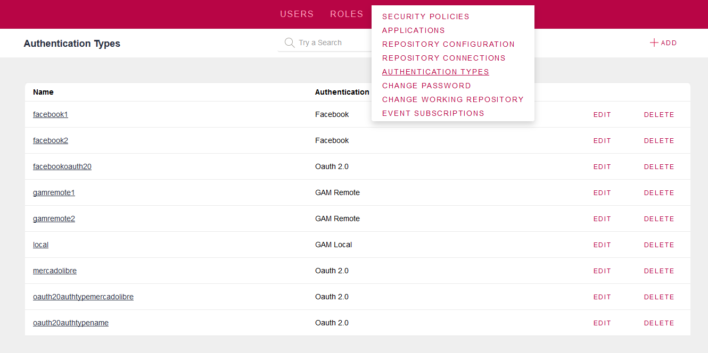

Defines different types of authentication for the application which has integrated security enabled (GeneXus Access Manager).
Authentication Types can be defined using GAM Backoffice, or just using the GAM API in any object. See Figure 1 where "Work With Authentication Types" Web Panel is shown.

| Local Authentication Type | User credentials are stored in GAM database repository. |
| Facebook Authentication Type | Authentication is done using Facebook. |
| External Authentication Type: |
In case of External Web service, authentication is done through any SOAP web service which applies to some standards, and has to be declared in the Authentication Type configuration, specifying its location, and other usefull information to connect to it. In case of Custom, the authentication is done using any external program, which has to apply to some standards in the input and output parameters. |
| Twitter Authentication Type | Authentication is done using Twitter. |
| Google Authentication Type | Authentication is done using Google. |
| GAMRemote Authentication Type | Authentication is done using another GAM application. Only GeneXus Evolution 3. |
| Oauth 2.0 Authentication Type | Authentication is done using any Oauth 2.0 provider. |
GAM Repository: Default Authentication Type property